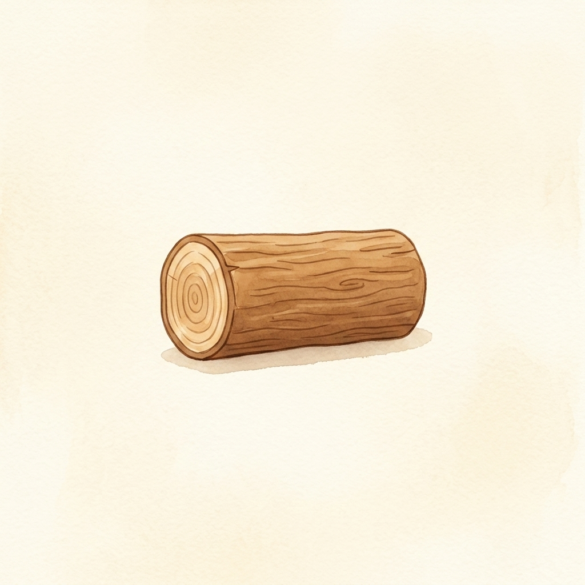
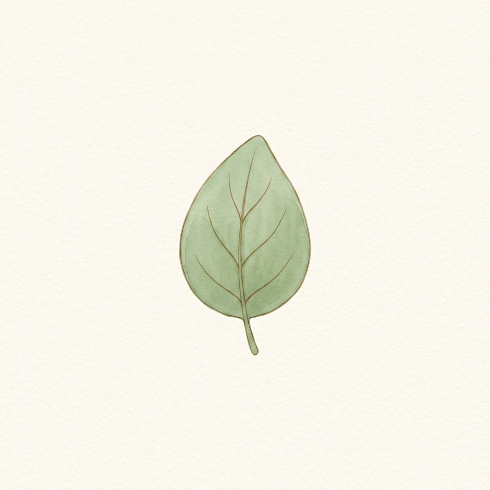
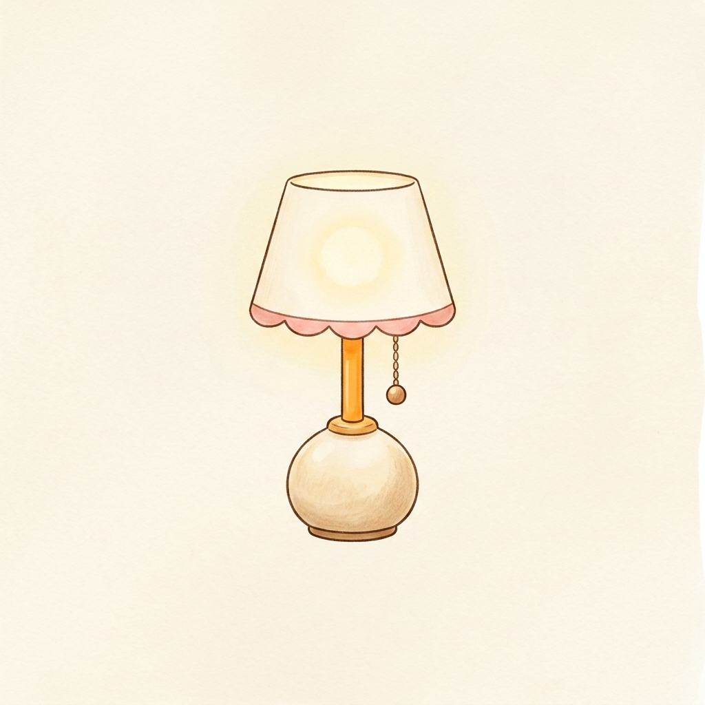
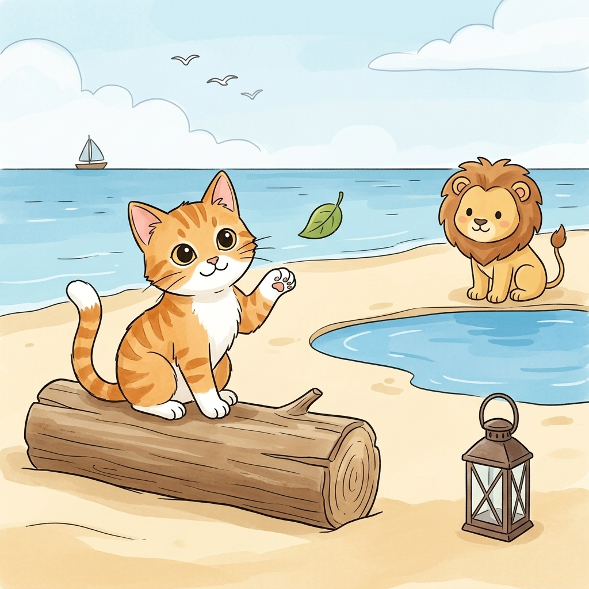
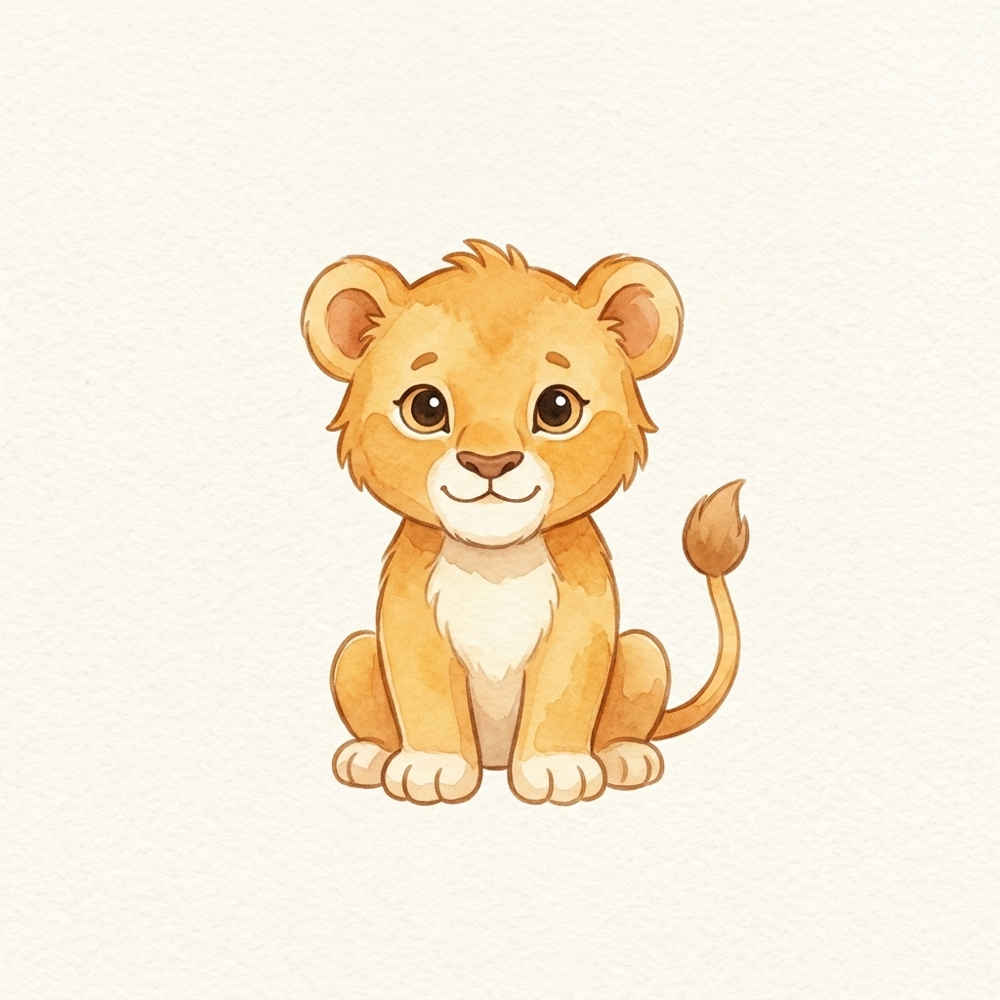
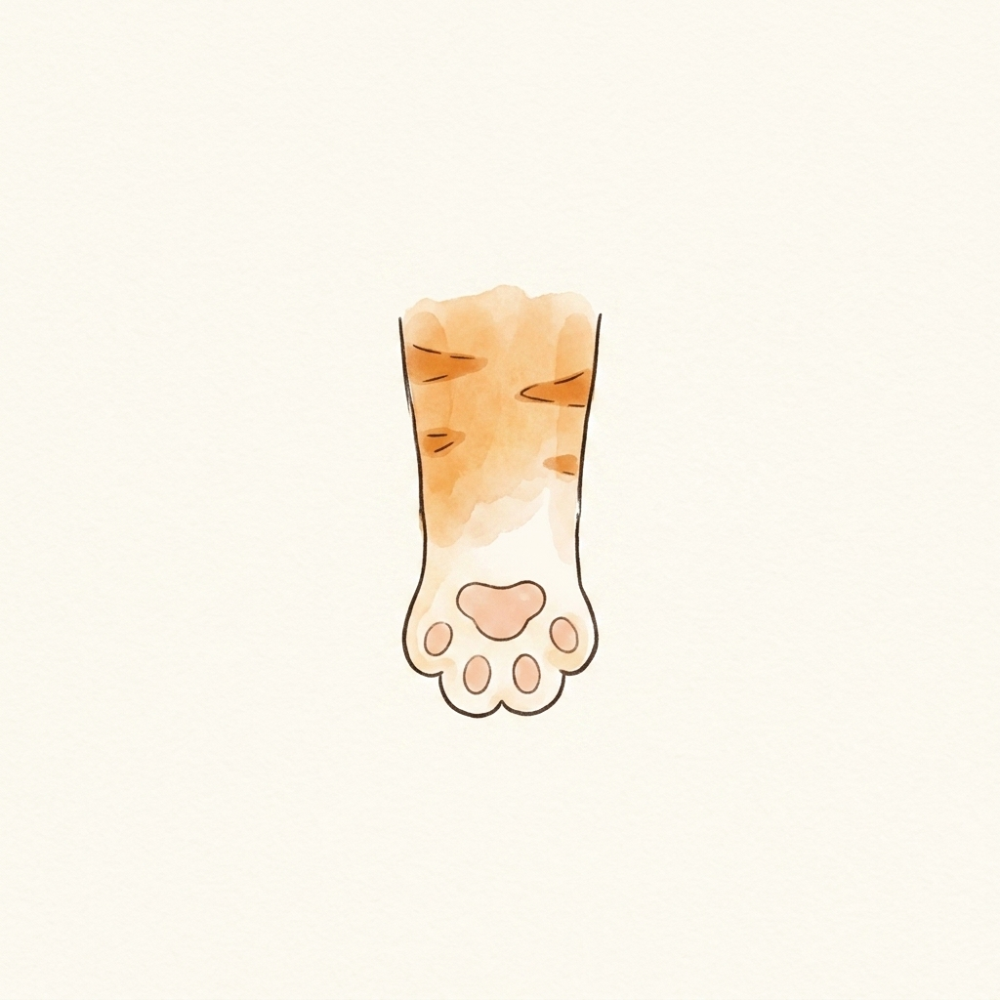
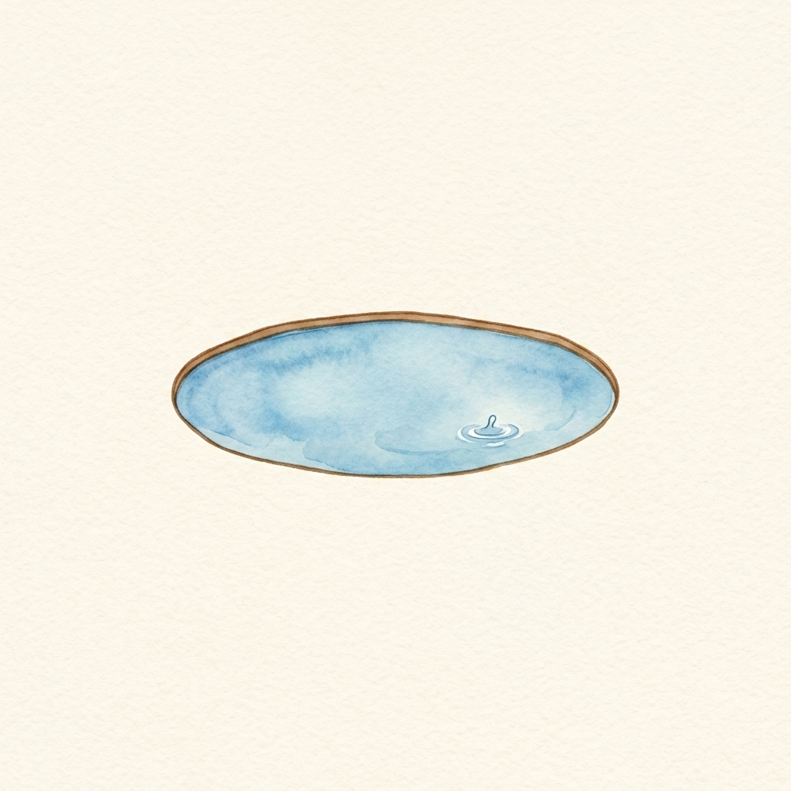

Step 1 · Say the Sound
L
L can say /l/, like leaf.

log
leaf
lampSay one sound. Read a few words. Read one tiny story with Cat.

L can say /l/, like leaf.

log
leaf
lamp


Cat sat on a log.
A leaf fell by Cat.
Cat saw a lamp.
A lion sat by the lake.
Cat lifted one leg.
Look, a leaf!
Now you learned L.
That’s a win.
If it still feels fun, read the story again.